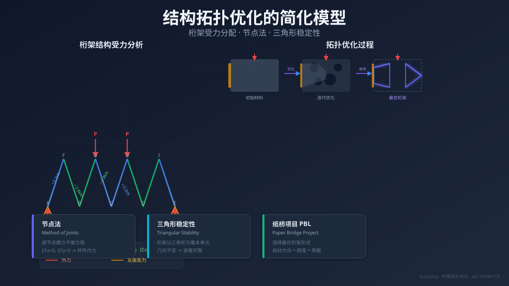
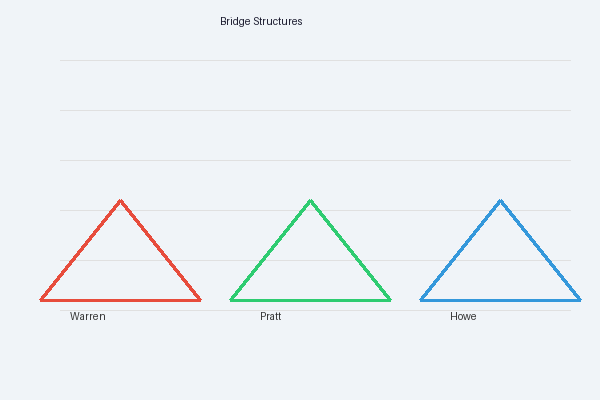
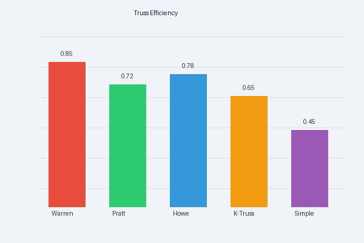
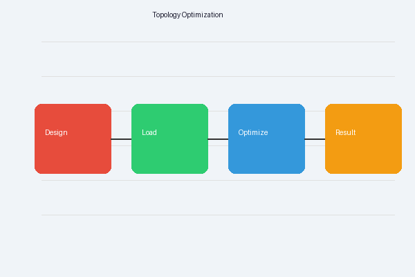

为什么三角形桁架比方形框架更"稳"？如果纸的总量有限，哪种结构能承受最大重量？

你正在做纸桥项目——选一个你卡住的问题，后面围绕它展开。
选择或输入后，本课会围绕你的问题展开。
先测一下你的起点，学完再来对比。
下面哪种结构在只受重力时不会变形？
📌 项目衔接：学完本节后，你能完成纸桥项目「结构与装置」阶段——为 P1（三角桁架）、P2（拱形）、P3（蜂窝）三种纸桥提供力学分析依据。
日常生活中，你一定听过"三角形最稳"这句话——建筑工地的塔吊、桥梁的钢架、甚至自行车的车架，到处都是三角形。
但直觉无法量化。当你在纸桥项目中面临三个选择时，你需要回答：
🎯 核心追问
接下来，我们从第一个问题出发，建立桁架受力分配的简化模型。
你的任务是设计并制作一座承重纸桥模型，探究结构与材料对承载力的影响。

🎯 项目要求
问题是：三种结构到底差多少？为什么差？你需要力学分析，而不是凭直觉猜。
桁架是由直杆在端点铰接而成的结构。每根杆件只承受轴向力（沿杆方向的拉力或压力），不承受弯矩。
✅ 三角形桁架
❌ 方形框架
⚠️ 易错点
"三角形稳定"≠ 三角形不会断。稳定性指几何构型不变（不变形），不是指材料不破坏。纸条可能被拉断，但三角形的形状不会变。
拖动节点观察：三角结构不变形，方形结构会变形。点击"加对角杆"看方形变稳定。
拖动红色节点试试
二力杆：桁架中的杆件只在两端受铰接约束，因此力只能沿杆轴线方向传递。
📝 节点法三步骤
纸桥 P1 的一个三角单元，顶点受 100 N 竖直载荷，两底脚铰支。求三根杆力。
📐 解题过程
💡 项目关联：P1 三角桁架纸桥中，每根纸条都受拉力，这是纸的最佳受力模式。后续加载测试中注意观察——失效通常发生在节点连接处（胶水/折缝），而非杆件中段断裂。
调整载荷大小，实时查看每根杆件的受力（蓝色=拉力，橙色=压力）。
纸桥项目 P1（三角桁架）、P2（拱形）、P3（蜂窝）的力学特性对比：
| 特性 | P1 三角桁架 | P2 拱形 | P3 蜂窝 |
|---|---|---|---|
| 传力路径 | 沿杆件→支座 | 沿拱轴→支座推力 | 沿壁板→节点分散 |
| 主要受力类型 | 轴向拉/压 | 压+弯 | 压+屈曲 |
| 材料利用率 | ⭐⭐⭐ 高 | ⭐⭐ 中 | ⭐⭐ 中 |
| 对纸的适配 | 纸条做杆 → 拉压均可 | 纸弯拱 → 怕弯矩 | 纸折叠 → 怕屈曲 |
| 设计难度 | 中 | 低 | 高 |
💡 纸桥项目结论：纸的抗拉能力远强于抗压/抗弯。三角桁架让纸条以轴向力传载，最大程度利用纸的抗拉优势。

结构拓扑优化的核心问题：给定载荷和约束，用最少的材料布置最强的结构。
🔍 纸桥项目中的拓扑优化思维
这就是你在加载测试中要计算和比较的核心指标。

1. 为什么三角形桁架比方形框架更稳定？
2. 二力杆的受力特征是？
3. 在纸桥项目中，三角桁架为什么更适合用纸制作？
4. 简单桁架中，节点受竖直向下载荷 P=200N，两杆与水平面夹角均为 45°。求每根杆的内力。
❌ 典型错误 1：混淆"稳定"和"强度"
错因：把"三角形不变形"理解成"三角形不会断"。纠正：稳定=几何构型不变；强度=材料不断裂。纸条可能被拉断（强度不足），但三角形的形状不会变（稳定）。
❌ 典型错误 2：节点法中力的方向设错
错因：画受力图时，把杆对节点的力方向画反（节点法中应假设杆力为拉力，指向远离节点）。纠正：始终设杆力为拉力→指向外。算出正=拉力，负=压力。
❌ 典型错误 3：只比最大承载力，忽略自重
错因：拱形纸桥可能承重更大，但用纸量也多。纠正：必须用承载效率 η = Pmax/m 比较，而非只看 Pmax。这正是你项目交付物中需要计算的。
✅ 正确解题模板
学完本节后，你在项目中能完成的具体动作：
📋 承载力影响因子清单
在因子清单中将"结构形式"列为首要影响因子，并用本节力学分析说明理由
🏗️ 三种结构纸桥模型
折叠 P1-P3 时，知道每根杆件传力方向，标注拉力杆和压力杆
📊 加载数据分析
用承载效率 η = Pmax/m 比较三种结构，而不是只比最大承载力
➡️ 下一步：回到项目主线「控制与实现」阶段——控制材料质量与胶水用量，确保公平对比。
📐 回到纸桥项目：用力学分析辅助设计决策，不再凭直觉猜结构。
本节点的前置、后续和同域知识。